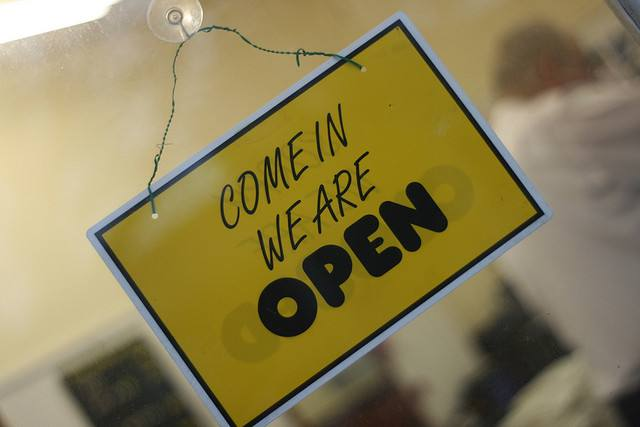
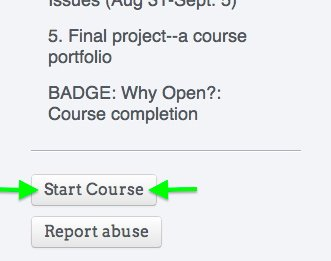

Project 365 #303: 301009 Blink And You’ll Miss It! / Pete / CC BY
What is openness? What are the different kinds of openness? Why engage in open activities, and what potential problems or obstacles might there be to doing so? These are some of the questions we’ll discuss in a course called “Why Open?,” at the School of Open from August 10 – September 5, 2014. This is the second iteration of this course, the first having taken place in August 2013.
We are still working on a few details about the course, but you can get a good sense of what we’ll do by visiting the course page. The topics for the four weeks are:
- What Does Open Mean? During this first week we’ll discuss what we think the various meanings of “open” are, and explore what others have said as well.
- Open licenses, and “open” vs “free”: During the second week we’ll talk about open licenses (especially Creative Commons licenses) and similarities/differences between what is open and what is free. We’ll also start working on a group project to engage in a particular open practice.
- Open practices: During the third week we’ll work in small groups on an open practice, chosen by the group, then write a reflection on that experience.
- Openness: benefits and issues: In the last week we’ll finish off the course by trying to answer the question in the title: Why open? What are the benefits to openness, and what are some of the potential problems involved? How might we address those problems?
Two badges are available for participants:
- A badge for completing the open practice in Week 3.
- A final course badge for completing a portfolio of work in the course along with a final reflection.
We will also host at least two Google Hangouts with guest speakers who have expertise in the topics being discussed for a particular week (maybe three; we’re still finalizing these!), and at least one Twitter chat during the course (more if there is interest!). Participants will mostly be communicating and submitting assignments via Discourse (the tool used to host P2PU community discussion and School of Open community discussion), though we may also work together on some collaborative documents on Hackpad.
Registration is open now! We’d love for you to join us; please pass this information on to anyone you think might be interested!
To join the course, simply click the ‘Start Course’ button on the bottom left of the course page.

Why not use jitsi instead of google hangouts?
Short answer: because I was not aware of it! But I just did a quick search on the site, and I wonder if it’s something very easy for computer amateurs like myself. I was having trouble seeing how I would install Jitsi Meet from the Github page, having zero experience with Github. Then I thought maybe I just need the Jitsi package for voice and video chat, but I am not sure what a “stable build” versus a “nightly build” are. I would need some serious help to set this up; would our participants need it too?